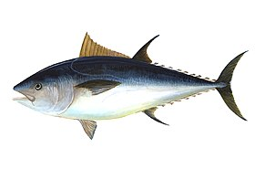

Moto Lygie 1957 detonada, seminovo, usada poucas vezes.
Valor: R$4.500. Preço fixo e não será negociado.
Contato: motosusadas@yahoo.comVagas de emprego disponívels na empresa Tumalaca.
Favor mandar e-mail para o seguinte endereço, contendo a vaga desejada e seu currículo:
AtumalacaRH@gmail.comPessoas para se juntar ao Culto do Peixe.
Todos os dias oramos para o deus Atum, e é dever cívico do membro odiar o Culto do Bacon.
Levar também 1 quilograma de peixe de sua escolha todas as reuniões e 2 quilogramas de Atum na hora do cadastro, como taxa.
Reuniões todas as terças, as 16:00h. Local: Maria Pescados.
Carros e motos novos e seminovos. Vendo e troco.
Telefone: (47) 1234-1234
Roubo, furto e tráfico de drogas.
Nome: Saul Goodman
Telefone: (47) 4321-4321
Pessoas para se juntar ao Culto do Bacon.
Nosso dever é espalhar amor.
Confira nossos cantos lorempsianos, que cantamos com louvor todas as reuniões:
Reuniões todas as quartas, as 03:00h. Local: Açougue do Giassi.
Faço frete para cargas de até 250kg.